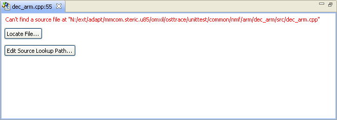
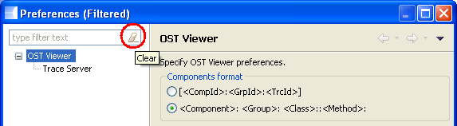

Trace Viewer Workbench
Documentation > References > Source Not Found View
|
|
Trace Viewer Workbench Documentation > References > Source Not Found View |
[Only for OST frames with dictionaries containing source info]
Description
This view appears when the source file info have been found (source path, source line) but the source file could not be located in the file system.

Find your source file
In order to locate your source file, this view provides 2 different methods detailed below:
Locate File...
This button opens a file dialog that allows you to select the missing file in your file system. The original parent directory path is then mapped to the new one. This mapping is persisted in the Source Lookup Path preferences, so it will still be active when you restart the workbench.
Edit Source Lookup Path...
Directly edit the source lookup preferences to add new paths.

Click on "Add" to add a new lookup path.

The striked choices are not used in Trace Viewer since the workspace is not accessible, and the absolute path has not been found by source editor.
So you can choose either:
File System Directory:
Adds the specified directory (and optionnaly its sub-directories) to the source lookup path. You may add here the top level directory of your project, and check the "Search subfolders" checkbox.

Path Mapping:
Adding a path mapping is equivalent to the operation done by the "Locate File..." method. Note that file separator are replaced by platform dependent ones, but it still works (see the example below).


Tips
Edit the Source Lookup Path from the menu:
The source lookup path preferences are accessible in the Preferences window (Tools > Preferences). However, this preferences page is hidden by default. To show the hidden preferences click on the rubber button which is located at the end of the text field "type filter text" as shown in the picture below:

Then simply click on the "Source Lookup Path" item in the tree:

|
|
© STMicroelectronics and others 2010, 2011, 2012. All rights reserved. |